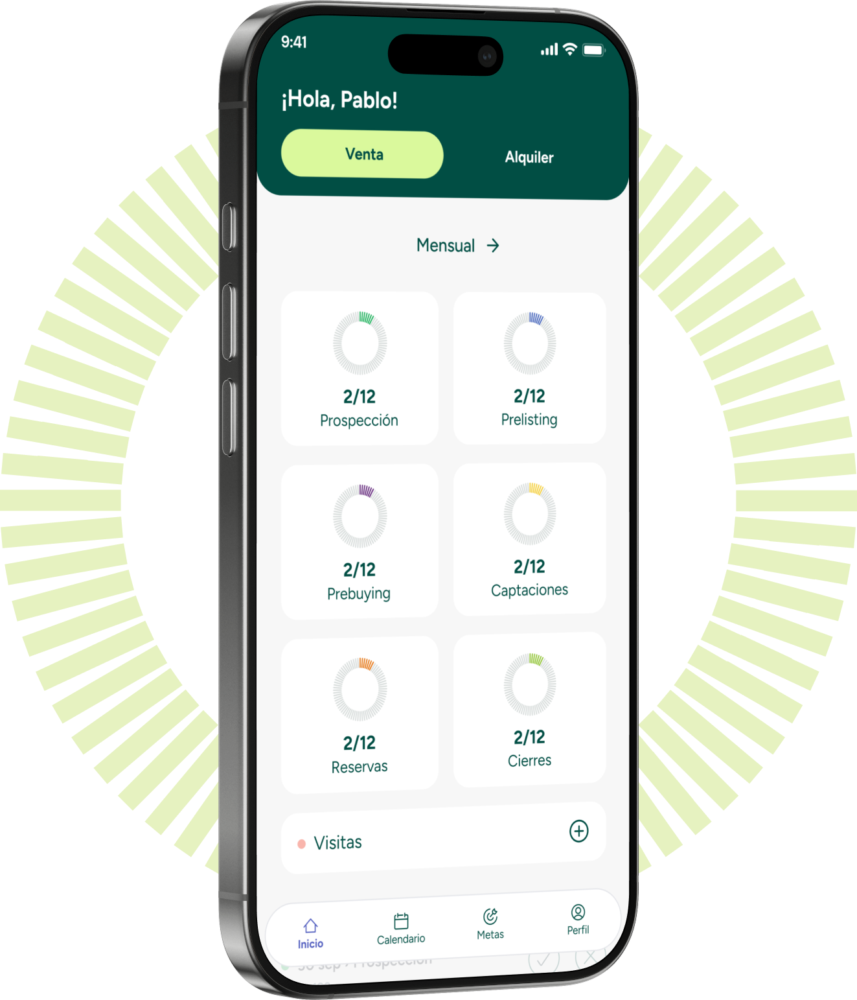
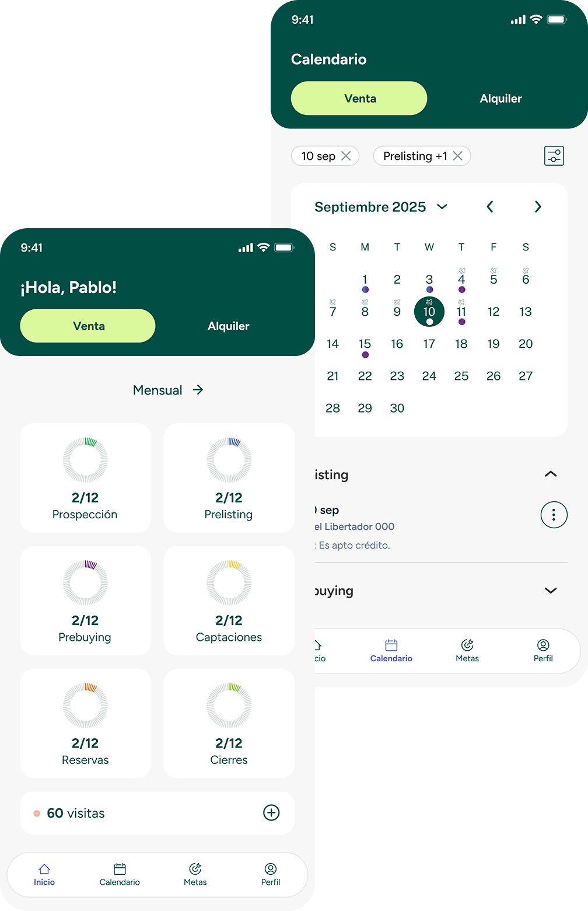
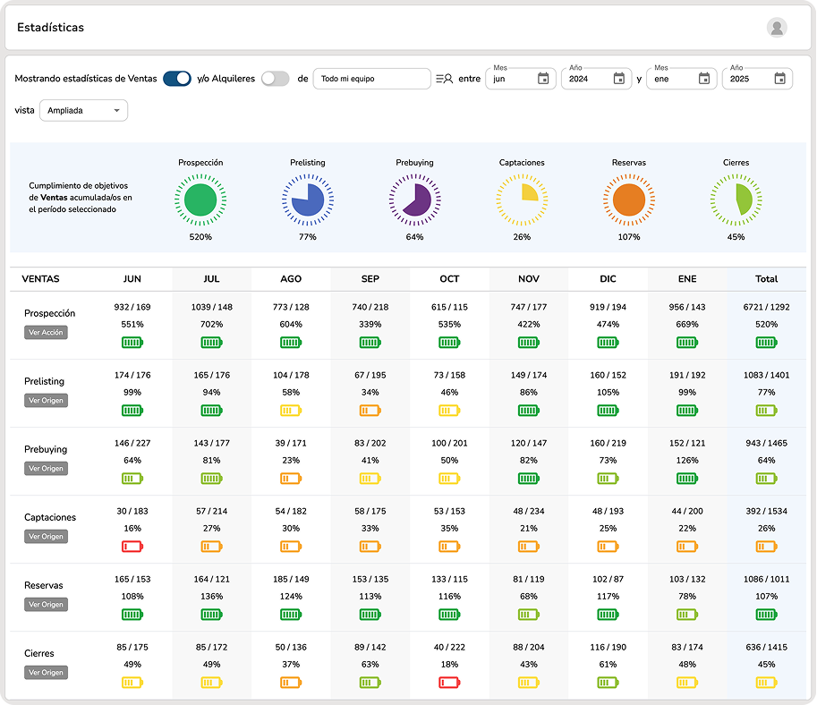

TRACKER te da lo que necesitas para avanzar todos los días
Diseñada para el trabajo inmobiliario real, TRACKER te acompaña a cumplir tus objetivos sin estrés, sin perder tiempo y con resultados visibles.
TRACKER te da lo que necesitas para avanzar todos los días
Diseñada para el trabajo inmobiliario real, TRACKER te acompaña a cumplir tus objetivos sin estrés, sin perder tiempo y con resultados visibles.
TRACKER es para ti,
sin importar tu rol
Diseñada para agentes, líderes y brokers que quieren trabajar con foco y ver resultados reales todos los días.
TRACKER es para ti,
sin importar tu rol
Diseñada para agentes, líderes y brokers que quieren trabajar con foco y ver resultados reales todos los días.
Una sola herramienta, pensada para todo el ecosistema inmobiliario.
Una sola herramienta, pensada para todo el ecosistema inmobiliario.

→ Selecciona el tipo de acción en Prospección.
→ Registra el origen del cliente en Prelisting, Prebuying y Captación.
→ Indica si fue una o dos puntas y agrega detalles en Reservas y Cierres.
→ Utiliza el botón Visita para registrar recorridos a propiedades.
→ Disponible para operaciones de venta y alquiler.
Calendario de seguimiento
Calendario de seguimiento
- Visualiza todas tus actividades en un calendario simple y claro.
- Revisa lo que hiciste cada día, accede al detalle de cada gestión y haz el seguimiento de tus clientes con total claridad.
- También puedes consultar el historial de meses anteriores, con cada acción registrada, sus notas y detalles.

Ideal para líderes, managers y brokers que necesitan
gestionar con datos, no con intuición.
Lo dicen quienes ya usan TRACKER todos los días
Lo dicen quienes ya usan TRACKER todos los días
Precios simples, para equipos que quieren crecer
Pagas sólo por los usuarios activos. Cuanto más grande tu equipo, menor es el valor por persona.
¿Tienes dudas? Aquí respondemos las más comunes
¿Tienes dudas? Aquí respondemos las más comunes
¿Quieres que te contactemos?
Completa el formulario
Completa el formulario →